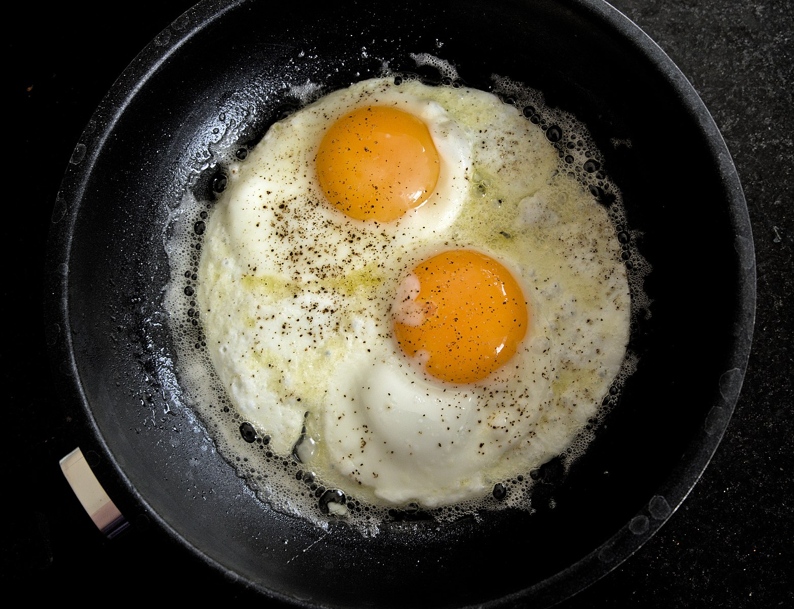

Home Page
Fried Eggs

A good way to start the day. The hunt for this simple recipe is over,
no need for further poaching.
Ingredients
- 2 eggs
- A bit of vegetable oil
- Salt
Steps
- Heat up the oil in a frying pan
- Crack the eggs and release them into the pan
- Add a pinch of salt and let the eggs fry
- When they seem cooked on one side, flip them over